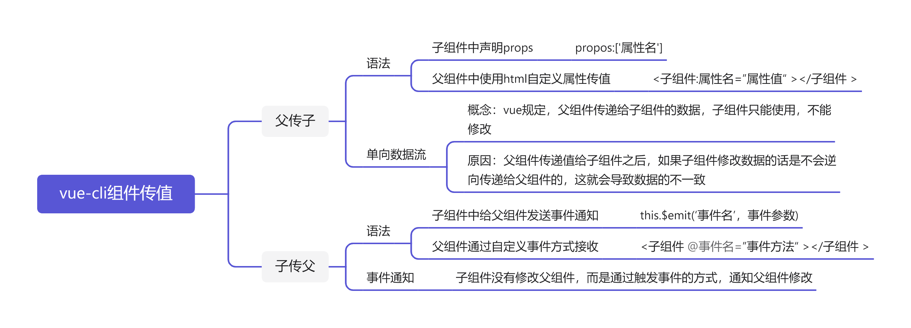
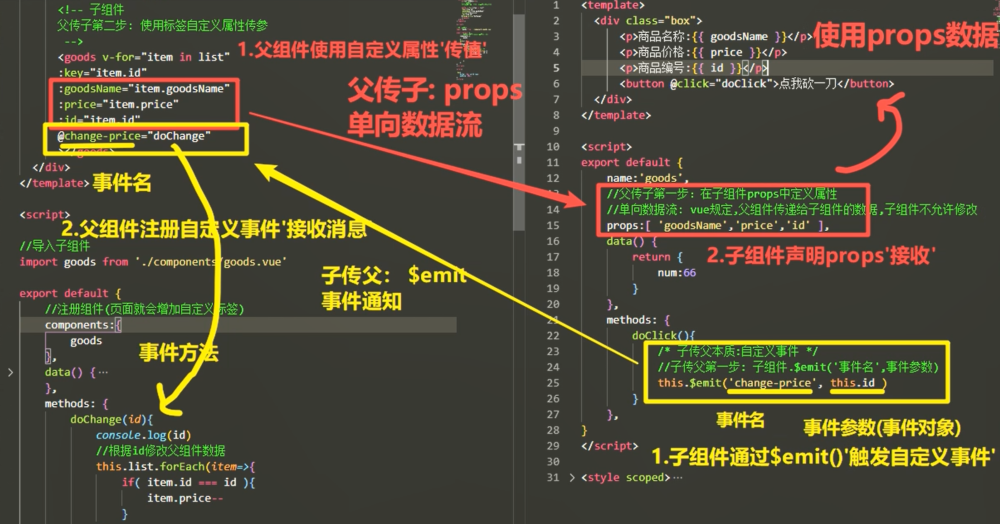

HTML 元素是用于创建页面的构建基块。 可通过将特性设置为不同的值来配置这些元素的行为。 正如我们前面强调的那样，创建组件与创建自定义 HTML 标记相似。 因此，你可以通过属性传入信息，从而提高组件的可重用性。
属性是一组可传入组件的值。 你通常会向组件添加属性，以传入它应显示或更改其行为的值。
可通过在子元素的 script 元素内添加 props 字段来定义组件的属性。 可以列出组件属性的名称，方式是将它们以数组形式列出。
props中的数据会像data中的一样被平铺到vue实例中。因为这个相似的属性，所以我们在设置的时候需要注意不要在data和props中设置一样的数据，会发生冲突报错。
<!-- UserDisplay component -->
<script>
export default {
name: 'UserDisplay',
props: ['name', 'age']
}
</script>
Vue.js 会将名为
UserDisplay的组件转换为用短横线分隔的小写形式user-display。
在父组件中使用行内自定义 attribute传值
xxxxxxxxxx
<!-- inside parent component -->
<template>
//属性名=属性值
<user-display name='Cheryl' age='28'></user-display>
</template>
<script>
import UserDisplay from './UserDisplay.vue';
export default {
components: {
UserDisplay
}
}
</script>
注意：prop中的属性不能有大写字母，不要使用驼峰命名。建议使用
-作为分隔符（这是html的命名规则，js的命名遵循小驼峰规则）原因：行内自定义属性attribute不支持大写
在组件内，可以使用读取数据的方式来读取属性。 完整的 UserDisplay 组件可能如下所示：
xxxxxxxxxx
<template>
<div>Name: {{ user.name }}</div>
<div>Age: {{ user.age }}</div>
</template>
<script>
export default {
name: 'UserDisplay',
props: {
user: {
name: String,
age: Number
}
}
}
</script>
在实际开发中，组件的复用次数并不是一个一成不变的固定值，所以我们常常把组件传值和v-for等语法综合起来运用。
单向数据流：与有状态数据不同，通过属性传递值是单向绑定。 如果对属性进行了更改，这些更新不会扩展到父级。
细节：引用类型赋值本质是赋值地址，一但修改互相影响，非常不便于维护
组件可能需要通过事件向父组件返回数据。 可以通过向 $emit 传递其他参数来返回任何数据。 如果希望通过返回 true 来指示更新成功，可以像下面这样更新调用：
xxxxxxxxxx
<button @click="$emit('userUpdated', true)">Save user</button>
注意：@click="doclick" 在这个表达式中click是事件名，doclick是方法名
说到方法，我们当然也可以用方法来解决这个问题
xxxxxxxxxx
methods: {
saveUser() {
// perform other operations
this.$emit('userUpdated', true); // emits event
}
}
完成数据的返回后，在父组件中就可以调用这些数据了，我们需要通过给父组件添加自定义事件来调用数据：
xxxxxxxxxx
<booking-form @booking-created="addBooking" :cabins="cruise.cabins"></booking-form>
我们将 addBooking 函数连接到 booking-created
事件，addbooking和其他的方法一样，可以在methods里面定义使用，注意父组件中的事件名要与子组件$emit中的事件名一致
特别声明：虽然我们从子组件中获得了数据，但是我们必须清醒的意识到，数据并不是在子组件中完成修改的，子组件只负责传递信息，包括但不限于id等，修改的操作最终是在父组件中完成的
组件本质相当于一个自定义标签，也支持v-for列表渲染。
组件语法要求很严格： v-for必须要添加key值， 而且index如果没有使用则不能写，否则会报错（用不上index，就强制不写。需要使用index的时候再写）
父组件通过props来传值的时候，如果在行内想要访问data中的数据，需要使用v-bind指令
